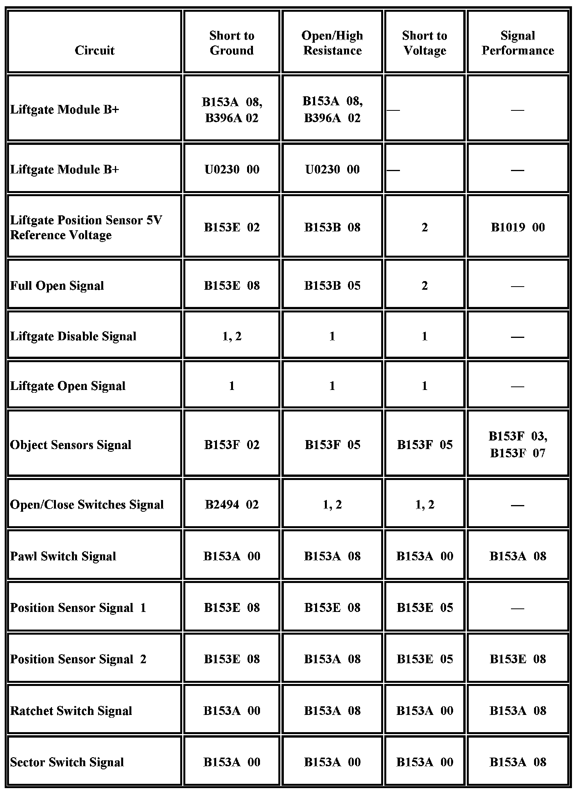
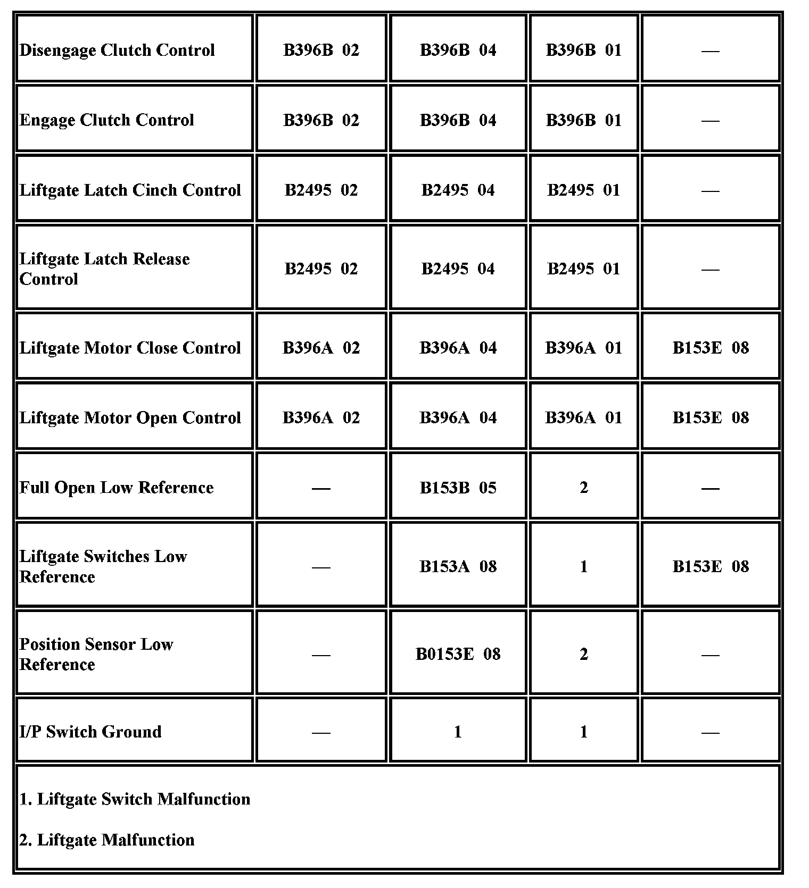

Power Liftgate Inoperative
Power Liftgate Inoperative
Diagnostic Instructions
- Perform the Diagnostic System Check - Vehicle prior to using this diagnostic procedure Initial Inspection and Diagnostic Overview.
- Review Strategy Based Diagnosis for an overview of the diagnostic approach Initial Inspection and Diagnostic Overview.
- Diagnostic Procedure Instructions provides an overview of each diagnostic category Initial Inspection and Diagnostic Overview.
Diagnostic Fault Information


Circuit/System Description
The power liftgate module (LGM) controls operation of the liftgate latch motor and the liftgate actuator assembly. Under normal conditions the power latch can only be unlatched under power from the LGM through an input from the liftgate handle switch, the overhead console switch, or the remote keyless entry (RKE) transmitter, but the liftgate may be manually closed to the primary latched position without the LGM performing the power latch function. The ratchet, pawl, and sector switches are part of the latch motor assembly and are used by the liftgate control module to determine the state of the latch during the process of latching or unlatching. The ratchet and pawl switches will be inactive when the primary and secondary latches are latched, and the sector switch will be active during the power cinch function. The ON/OFF switch in the overhead console will enable or disable the power open/close operation of the actuator assembly and have no effect on power latch operation. The liftgate actuator assembly consists of the actuator drive motor with 2 internal hall effect sensors. The drive motor is mated to a worm type gear off the actuator clutch and when the clutch is engaged the motor rotation is transferred to the clutch gear, intermediate gear, and actuator arm gear. The full open switch is a limit switch mounted on the liftgate actuator assembly along side the actuator arm gear, and will make contact with the cam on the actuator arm gear when the liftgate is near the full open position. The LGM continuously monitors the liftgate location and direction of travel using the 2 hall effect sensors in the drive motor. The sensor counts are used to determine when the liftgate has reached the open and closed points of travel where the actuator clutch should be disengaged. These positions may vary slightly and must be learned when most liftgate components are serviced.
Diagnostic Aids
Before testing can be performed, the liftgate must be opened. Refer to Opening the Liftgate Without Electrical Power for the appropriate procedure.
Power liftgate function will only be allowed if certain operating criteria are met. Any of the following may cause the power liftgate not to function:
- After a power loss of the low current battery supply until the ignition is cycled.
- Vehicle is not in park.
- Engine cranking is present.
- Ambient temperature at the LGM must be within -17 to +80°C (+1 to +176°F).
- Liftgate motor excess current is detected.
- System voltage is out of range.
- A DTC is set that disables power liftgate functionality.
- The liftgate is locked when attempting to open from exterior handle.
The LGM also receives input from 2 pressure sensing object detection sensors. If either of these sensors indicates an object may be pinched as the liftgate is brought to the closed position, the liftgate will reverse direction and power close operation will be suspended until the pressure against the sensor is released.
Whenever the LGM loses power or is disconnected, the ignition must be cycled OFF then ON in order to reactivate the LGM.
Certain SIR DTCs will make the power liftgate inoperative. Correct any SIR concern first before performing any extensive power liftgate diagnostics.
Reference Information
Schematic Reference
Liftgate Schematics Electrical Diagrams
Connector End View Reference
Vehicle Access Connector End Views Connector Views
Description and Operation
Rear Hatch/Gate Description and Operation Description and Operation
Electrical Information Reference
- Circuit Testing Component Tests and General Diagnostics
- Connector Repairs Component Tests and General Diagnostics
- Testing for Intermittent Conditions and Poor Connections Component Tests and General Diagnostics
- Wiring Repairs Component Tests and General Diagnostics
Scan Tool Reference
- Scan Tool Data List
- Scan Tool Data Definitions
- Scan Tool Output Controls
Circuit/System Verification
1. Ignition ON, observe the scan tool LGM Disable Switch parameter while pressing and depressing the Liftgate Enable/Disable button on the interior liftgate control switch. The parameter should change from Inactive to Active.
-> If the value does not change, refer to Interior Liftgate Control Switch Inoperative.
2. Observe the scan tool LGM Front Control Switch parameter while pressing and releasing the liftgate button on the interior liftgate control switch. The parameter should change from Inactive and Active.
-> If the value does not change, refer to Interior Liftgate Control Switch Inoperative.
3. Observe the Liftgate Handle Sw. Status parameter while pressing and releasing the touchpad on the liftgate handle switch and the liftgate close switch next to the liftgate latch, the parameter should change from Inactive and Active.
-> If the value does not change, refer to Liftgate Handle Switch Inoperative.
4. Manually open the liftgate and verify that the liftgate will remain at or near the full open position for several minutes.
-> If the liftgate will not remain open, replace the liftgate struts.
5. Command the LGM Open/Close Test with a scan tool, the liftgate should perform the OPEN and CLOSE functions.
-> If the liftgate fails to OPEN or CLOSE, refer to Power Liftgate Malfunction.
-> If the liftgate closes and immediately reopens, refer to Liftgate Closes and Reopens.
Circuit/System Testing
Interior Liftgate Control Switch Inoperative
1. Ignition OFF, disconnect the harness connector at the interior liftgate control switch.
2. Test for less than 1 ohm between the ground circuit terminal C and ground.
-> If greater than the specified range, test the ground circuit for an open/high resistance.
3. Ignition ON, verify the scan tool LGM Disable Switch parameter is Inactive.
-> If not the specified value, test the signal circuit terminal A for a short to ground. If the circuit tests normal, replace the LGM.
4. Verify the scan tool LGM Front Control Switch parameter is Inactive.
-> If not the specified value, test the signal circuit terminal D for a short to ground. If the circuit tests normal, replace the LGM.
5. Install a 3A fused jumper wire between the signal circuit terminal A and ground. Verify the scan tool LGM Disable Switch parameter is Active.
-> If not the specified value, test the signal circuit for a short to voltage or an open/high resistance. If the circuit tests normal, replace the LGM.
6. Install a 3A fused jumper wire between the signal circuit terminal D and ground. Verify the scan tool LGM Front Control Switch parameter is Active.
-> If not the specified value, test the signal circuit for a short to voltage or an open/high resistance. If the circuit tests normal, replace the LGM.
7. If all circuits test normal, test or replace the interior liftgate control switch.
Liftgate Handle Switch Inoperative
1. Ignition OFF, disconnect the harness connectors at the liftgate handle switch and liftgate close switch.
2. Test for less than 20 ohms between the low reference circuit listed below and ground:
- Liftgate handle switch low reference terminal B
- Liftgate close switch low reference terminal A
-> If greater than the specified range, test the low reference circuit for a short to voltage or an open/high resistance.
3. Ignition ON, verify the scan tool Liftgate Handle Sw. Status parameter is Inactive.
-> If not the specified value, test the signal circuit terminal D for a short to ground. If the circuit tests normal, replace the LGM.
4. Ignition OFF, connect the harness connector at the liftgate close switch.
5. Ignition ON, observe the scan tool Liftgate Handle Sw. Status parameter while pressing and releasing the liftgate close switch, the parameter should change between Active and Inactive.
-> If the value does not change, test or replace the liftgate close switch.
6. If all circuits test normal, test or replace the liftgate handle switch.
Power Liftgate Malfunction
1. Ignition OFF, disconnect the harness connector at the liftgate latch assembly.
2. Ignition ON, verify the scan tool LGM Latch Pawl Sw. parameter is Inactive.
-> If not the specified value, test the signal circuit terminal 5 for a short to ground. If the circuit tests normal, replace the LGM
3. Verify the scan tool LGM Latch Sector Sw. parameter is Inactive.
-> If not the specified value, test the signal circuit terminal 4 for a short to ground. If the circuit tests normal, replace the LGM.
4. Ignition OFF, connect the harness connector at the liftgate latch assembly and disconnect the harness connector at the rear window wiper motor.
5. Ignition ON, test for greater than 9V between the signal circuit terminal C and ground.
-> If less than the specified range, test the signal circuit for a short to ground or an open/high resistance. If the circuit tests normal, replace the LGM.
6. If all circuits test normal, replace the liftgate latch assembly.
Liftgate Closes and Reopens
Important: Check the alignment of the liftgate striker, if the liftgate striker is adjusted too far inboard it could allow the LGM to detect an excess motor current condition and reverse the motor.
1. Ignition OFF, disconnect the C1 harness connector at the LGM.
2. Test for infinite resistance between the signal circuit terminal 8 and ground.
-> If less than the specified value, test the signal circuit for a short to ground.
3. Test for 15K - 25K ohms between the signal circuit terminal 8 and the low reference circuit terminal 16.
-> If less than the specified range, test the signal circuit for a short to ground or an open/high resistance. If the circuit tests normal, replace the left or right liftgate object sensor.
-> If not within the specified range, test the signal circuit between the left and right liftgate object sensors and the low reference circuit for an open/high resistance. If the circuits test normal, test or replace the left or right liftgate object sensor.
4. If all circuits test normal, replace the LGM.
Component Testing
Liftgate Object Sensor
1. Ignition OFF, disconnect the harness connector at the right liftgate tape switch.
2. Test for 10K ohms between the signal terminal A and the low reference terminal B.
-> If not within the specified range, replace the right liftgate tape switch.
3. Disconnect the harness connector at the left liftgate tape switch.
4. Test for 10K ohms between the signal terminal A and the low reference terminal B.
-> If resistance is not within the specified range, replace the left liftgate tape switch.
Liftgate Handle/Close Switch
1. Ignition OFF, disconnect the harness connector at the appropriate liftgate switch.
2. Test for infinite resistance between the terminals listed below with the switch in the open position.
- Liftgate handle switch terminal A and terminal B
- Liftgate close switch terminal A and terminal D
-> If not the specified value, replace the liftgate switch.
3. Test for less than 2 ohms between the terminals listed below with the switch in the closed position.
- Liftgate handle switch terminal A and terminal B
- Liftgate close switch terminal A and terminal D
-> If greater than the specified range, replace the liftgate switch.
Liftgate Latch Assembly
1. Install a 20A fused jumper wire between the control terminal 1 and 12V. Momentarily install a jumper wire between the control terminal 3 and ground. The liftgate latch assembly should perform the CINCH or RELEASE function.
-> If the function does not perform as specified, replace the liftgate latch assembly.
2. Reverse the jumper wires, the liftgate latch assembly should perform the RELEASE or CINCH function.
-> If the function does not perform as specified, replace the liftgate latch assembly.
I/P Switch Assembly
1. Ignition OFF, disconnect the harness connector at the I/P switch assembly.
2. Test for infinite resistance between the signal terminal 7 and the ground terminal 3 with the liftgate open switch in the inactive position.
-> If not the specified value, replace the I/P switch assembly.
3. Test for infinite resistance between the signal terminal 8 and the ground terminal 3 with the liftgate disable switch in the inactive position.
-> If not the specified value, replace the I/P switch assembly.
4. Test for less than 3 ohms between the signal terminal 7 and the ground terminal 3 with the liftgate open switch in the active position.
-> If greater than the specified range, replace the I/P switch assembly.
5. Test for less than 3 ohms between the signal terminal 8 and the ground terminal 3 with the switch in the disable position.
-> If greater than the specified range, replace the I/P switch assembly.
Repair Instructions
Perform the Diagnostic Repair Verification after completing the diagnostic procedure.
- Liftgate Outside Handle Replacement Service and Repair
- Liftgate Close Actuator Motor Replacement Service and Repair
- Liftgate Side Upper Sensor Replacement Service and Repair
- Liftgate Actuator Switch Replacement Service and Repair
- Liftgate Release Switch Replacement Service and Repair
- Rear Window Wiper Motor Replacement Service and Repair
- Control Module References for liftgate control module replacement, programming and setup Control Module References